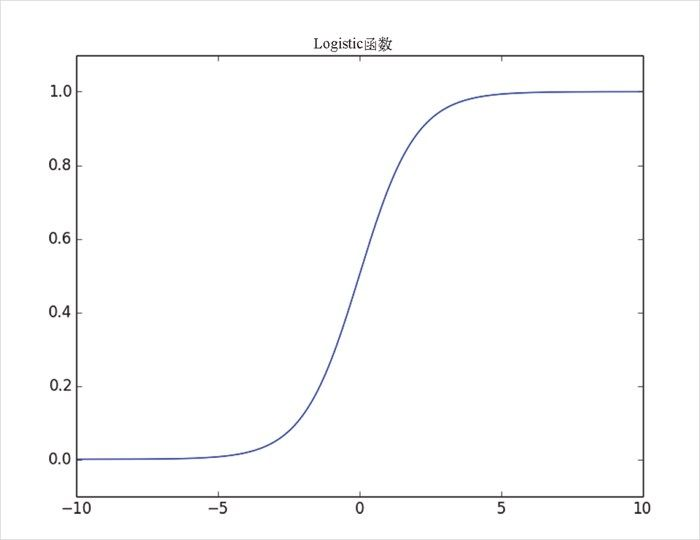
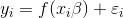
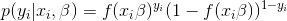
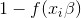
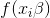
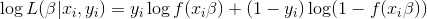

16.2 Logistic函数
对于逻辑回归来说，我们需要用到 Logistic 函数，其图像如图 16-3 所示：
def logistic(x):
return 1.0 / (1 + math.exp(-x))

图 16-3：Logistic 函数
随着输入的数字变大且符号为正，它的输出就会越来越接近 1。随着输入的数字变大且符号为负，它的输出就会越来越接近 0。此外，这个函数还有一个非常好的属性，即其导数可以通过下列代码简单求出：
def logistic_prime(x):
return logistic(x) * (1 - logistic(x))
这一点可以用于拟合模型：

其中，f 表示 logistic 函数。
回想一下，对于线性回归来说，我们是通过最小化误差的平方之和的方式来拟合模型，最终选出令得到这些观测数据的可能性最大的 β 。
但是，这里两者并不是等价的，所以我们直接使用梯度下降法来最大化似然。也就是说，我们需要计算似然函数及其梯度。
已知 β ，我们的模型指出每个 yi 等于 1 的概率为 f (xi β )，等于 0 的概率为 1-f (xi β )。
特别是，yi 的概率密度函数为：

如果 yi 为 0，则这等同于：

且如果 yi 为 1，则等同于：

事实表明，最大化对数似然要更加简单一些：

由于对数函数是单调递增函数，所以任何能够最大化对数似然函数的 beta 必然也能最大化似然函数，反之亦然。
def logistic_log_likelihood_i(x_i, y_i, beta):
if y_i == 1:
return math.log(logistic(dot(x_i, beta)))
else:
return math.log(1 - logistic(dot(x_i, beta)))
如果我们假设各个数据点之间相互独立，那么整体的似然就是各个似然之积。换句话说，整体的对数似然就是各个对数似然之和：
def logistic_log_likelihood(x, y, beta):
return sum(logistic_log_likelihood_i(x_i, y_i, beta)
for x_i, y_i in zip(x, y))
利用少许微积分知识，我们就能求出梯度了：
def logistic_log_partial_ij(x_i, y_i, beta, j):
"""here i is the index of the data point,
j the index of the derivative"""
return (y_i - logistic(dot(x_i, beta))) * x_i[j]
def logistic_log_gradient_i(x_i, y_i, beta):
"""the gradient of the log likelihood
corresponding to the ith data point"""
return [logistic_log_partial_ij(x_i, y_i, beta, j)
for j, _ in enumerate(beta)]
def logistic_log_gradient(x, y, beta):
return reduce(vector_add,
[logistic_log_gradient_i(x_i, y_i, beta)
for x_i, y_i in zip(x,y)])
好了，到此为止我们已经万事俱备了。